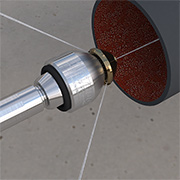
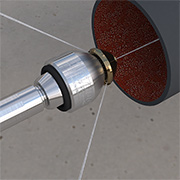
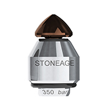
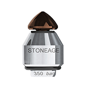

 

WV-1/4
The WV-1/4 uses StoneAge’s flow-through technology and features a revolutionary high-speed rotating design with no high pressure seals or bearings to service. It cleans lines as small as 2” with long sweeping elbows. The head design also features permanent, pre-drilled orifices, rather than threaded nozzles.
| Tool Family | Warthog Classic | |
|---|---|---|
| Tool Model | WV-1/4 | |
| Pipe Size | 2–4 in. | 51-102 mm |
| Pressure Range | 2–5k psi | 140–350 bar |
| Flow Range | 3-8 gpm | 11-30 l/min |
| Flow Rating | 0.8 Cv | |
| Pulling Force | 4-9 lb | 40 N |
| Inlet Connection | 1/4 NPT or BSPP | |
| Nozzle Ports | 3, drilled | |
| Diameter | 1.3 in. | 33 mm |
| Length | 2.0 in. | 51 mm |
| Weight | 0.45 lb | 0.20 kg |
| Part # | Front Jet | Back Jets | Flow |
|---|---|---|---|
| WV-1/4-A | .024 in. .6 mm |
2 x .052 in. 1.3 mm |
7-8 gpm 26-30 l/min |
| WV-1/4-B | .020 in. .5 mm |
2 x .039 in. 1.0 mm |
5-6 gpm 15-23 l/min |
| WV-1/4-C | .018 in. .45 mm |
2 x .032 in. .8 mm |
4-4.5 gpm 15-17 l/min |
| WV-1/4-D | .018 in. .45 mm |
2 x .028 in. .7 mm |
3-3.5 gpm 11-13 l/min |

Warthog WV-1/4 Overview Video
Our expert staff is available Monday through Friday 8AM - 5PM MST to answer questions and offer advice on your toughest cleaning applications.